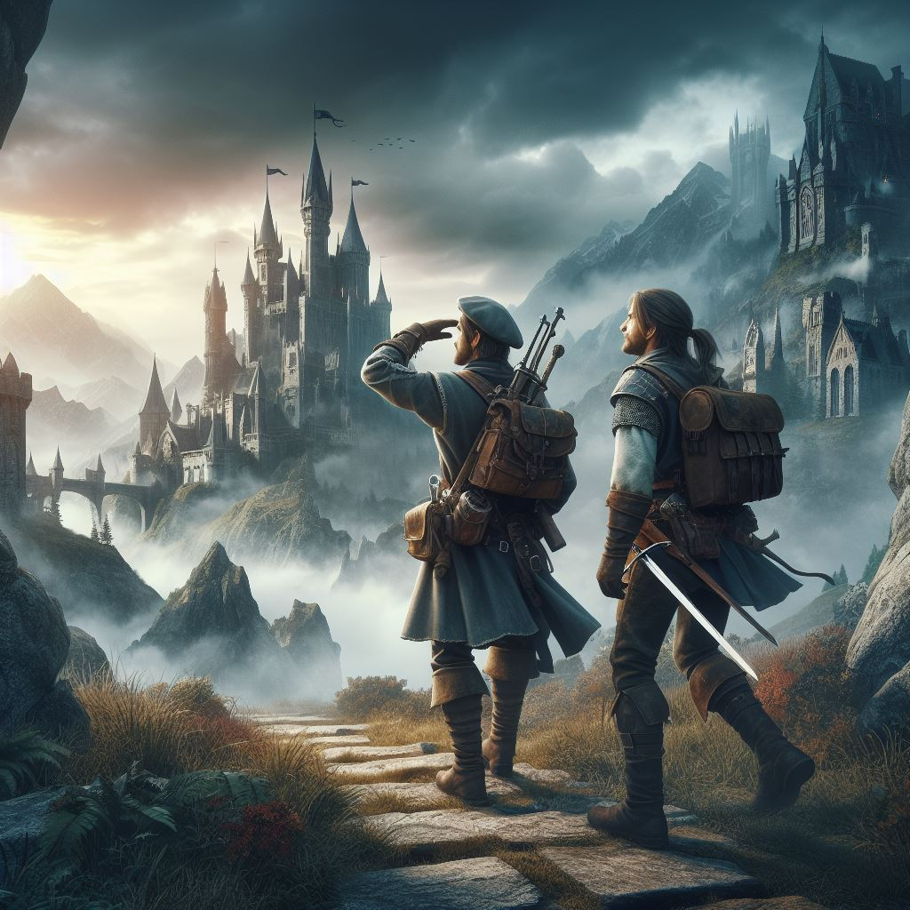

SEMAINE 1
Lors de cette première semaine, nous avons eu une idée. C'était la création d'un bot Discord pour faciliter le roleplay des serveurs Discord.

un petit rpg créer par antony et moi pour le labday de la coding factory
Lors de cette première semaine, nous avons eu une idée. C'était la création d'un bot Discord pour faciliter le roleplay des serveurs Discord.
Après pas mal de réflexion, nous avons décidé de complètement changer d'idée et de partir sur la création d'un MMORPG. Donc, cette semaine, nous avons créé un joueur qui peut se déplacer avec le début d'une IA ennemie. * Ce qui nous a pris le plus de temps, c'est la structure du projet avant de se lancer dans le code.
Arrivée à la semaine 3, nous savons que nous n'avons plus le temps pour des ajustements et qu'il va falloir passer de la première à la troisième pour pouvoir sortir une démo. Donc, cette semaine, nous avons pu créer un système de multijoueur, une carte (1 royaume, 4 donjons), un système de PNJ, un boss IA avec des mécaniques avancées.
Arrivée à la semaine 3, nous savons que nous n'avons plus le temps pour des ajustements et qu'il va falloir passer de la première à la troisième pour pouvoir sortir une démo. Donc, cette semaine, nous avons pu créer un système de multijoueur, une carte (1 royaume, 4 donjons), un système de PNJ, un boss IA avec des mécaniques avancées.
Arrivée à la semaine 3, nous savons que nous n'avons plus le temps pour des ajustements et qu'il va falloir passer de la première à la troisième pour pouvoir sortir une démo. Donc, cette semaine, nous avons pu créer un système de multijoueur, une carte (1 royaume, 4 donjons), un système de PNJ, un boss IA avec des mécaniques avancées.
Notre projet consiste en la création d'un MMORPG (Massively Multiplayer Online Role-Playing Game) au sein de mon école de code. En l'espace de cinq semaines, On va concevoir et développer un univers virtuel immersif où les joueurs peuvent interagir, explorer et accomplir des quêtes ensemble. Le jeu inclura des éléments de conception de monde, de programmation serveur-client, de gestion de base de données et d'expérience utilisateur. L'objectif est de présenter un prototype fonctionnel démontrant les compétences acquises en programmation et en conception de jeux en ligne au terme de cette période.